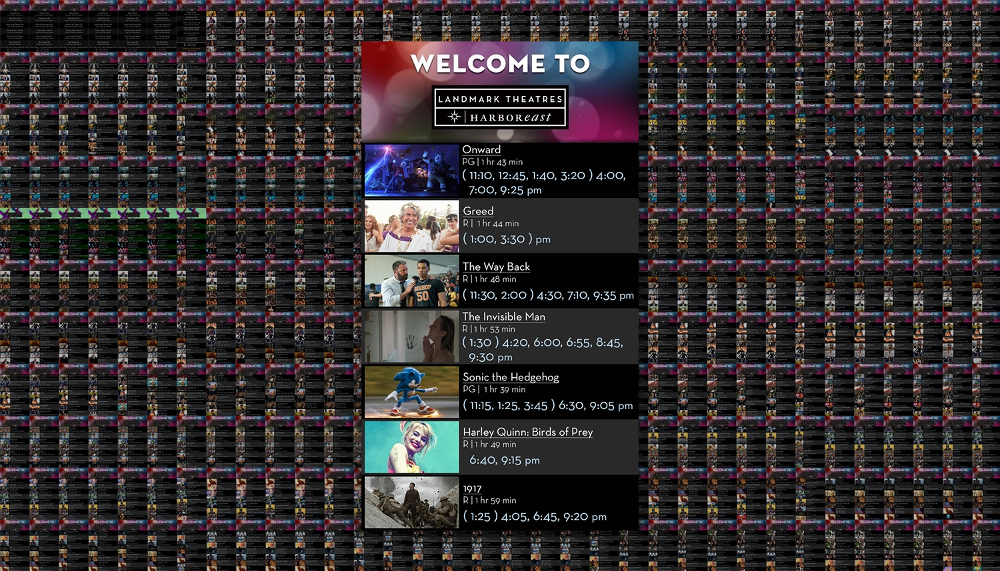
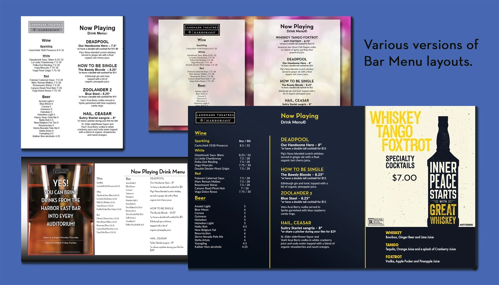
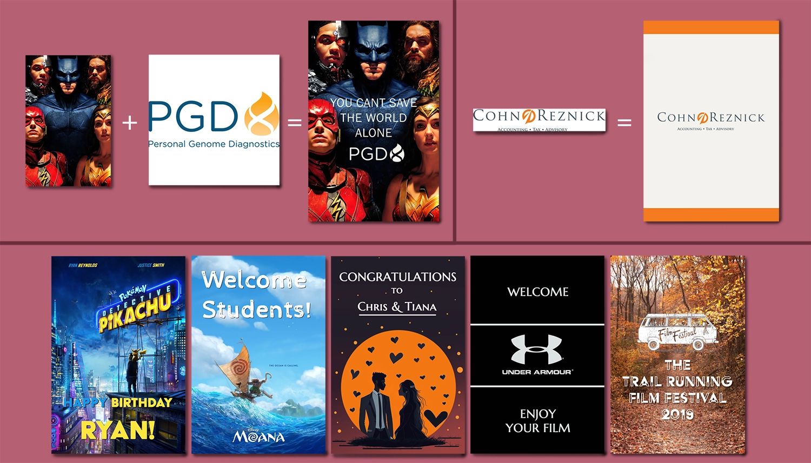

My Role:
- Theatre Management
- Design of Inhouse Projects
Client:
- Landmark Theatres
Year:
- 2013-2020
About:
This page stands out from other project pages, representing a phase of my life when I wasn't solely engaged in graphic design but utilized my developed skills for various design tasks while managing a business. These projects weren't always directed by my company or boss to redesign or improve elements; rather, they were personal initiatives I undertook to enhance different aspects of the business I was employed in.
Challenges:
The primary challenge for all the Landmark Projects was the absence of design software on our office computers, limiting us to Microsoft Word or MS Paint. Consequently, all my designs and work for the theater were completed off the clock, using my personal time at home. I believed that I could enhance the theater's aesthetics and design elements, motivating me to contribute beyond my regular duties.
Background:
Landmark Theatres Harbor East played a significant role in my life and professional journey. Starting as a projectionist during most of my college years, I transitioned to managing the theater in my senior year. The attractive pay and the thrill of managing a business led me to explore this alternative despite my education being in art and design. For a period, I shifted my focus from design to learning the fundamentals of running a business.
After a few years, I seized the opportunity to re-enter the art and design world, recognizing the potential to leverage my skills for the improvement of the business.

Movie Schedules: Work Flow
Scroll down to view the work flow process for the project.
Landmark Movie Schedule:
One of the initial projects I undertook upon assuming a management role was to modernize the movie times display at the concierge desk. While the theater had automated outside displays, the indoor schedule had been manually updated on an 8.5 x 11 piece of paper since the theater's inception. Recognizing the traffic bottleneck caused by this, I proposed installing a large vertical TV on the wall to display a digital movie schedule, enhancing visibility and ticket ordering convenience for guests. The challenge was that corporate lacked a single TV display or a suitable computer for an additional automated display.
This marked the beginning of my 4-year project, during which I designed a visually improved movie schedule compared to the original Word document. I diligently kept it updated for each day, creating approximately 1,475 schedules before departing Landmark. Additionally, I handled numerous reedits whenever the schedule changed.
From Paper to Digital:
The slide above illustrates the iterative layout process I followed when designing movie schedule times. The first design was the original Word document format used for years by my boss. The second image represents the initial layout adapted for a digital display. The third and final version incorporated pictures for each movie. To enhance display legibility, I aimed for larger and clearer information while ensuring all necessary details for guests were retained. Working actively at the theater allowed me to observe guest interactions with the sign each week, enabling ongoing tweaks and improvements to the signage.
Movie Schedule Templates:
The primary challenge with this project was the dynamic nature of the movie schedule, varying each day based on booked films, ongoing events, and time differences between weekdays, weekends, and holidays. This fluctuation affected the template rows, leading to the creation of multiple templates, accommodating 5 to 11 films, with adjustments to text formatting and image sizes for each film.
Weekly, I assessed the upcoming schedule to determine the needed templates. I then selected promotional images, cropped and organized them into folders for insertion into the appropriate template on the respective days.
Big Films and Holidays:
As I created more movie schedules, I streamlined the process by focusing on bigger films with high attendance and making custom edits to the main header. I also developed themed versions of the template to promote specific films. This extended to creating custom headers for holidays in coordination with another manager handling lobby decorations.
In summary, I enjoyed contributing to the theater, benefiting both guests and employees by enhancing the legibility of showtimes. Despite not being compensated for the hundreds of hours spent over my 4 years managing this project, I found it worthwhile for maintaining creativity and utilizing Photoshop, even when my primary focus wasn't on creating or designing art.
Bar Signage: Work Flow
Scroll down to view the work flow process for the project.
Bar Menus:
The signage and menus for our theater's bar were another project I designed and worked on over time. Regrettably, few versions of the final designs are available, as I needed to edit these templates at the theater, rendering the final versions inaccessible. This ongoing project required different versions for various mediums – a printed black and white menu for cost-effective printing, a medium-sized poster for display near the bar, and eventually, a digital display. The images above showcase some mockups used as blueprints for creating menus in Microsoft Office, allowing bar managers to update them at the theater.
I enjoyed this project as it provided real-world feedback, allowing us to adapt designs for optimal guest information consumption and aesthetics. We also coordinated with our home office to create themed posters for cocktails officially sanctioned by movie studios.
Following this project, I also redesigned various paper concession menus, but unfortunately, I no longer have access to those files.
Bar Opening Times
This was an enjoyable example of elevating a coworker's creation using actual design software. The top image was a digital sign made by a coworker (in MS Paint) to display the bar's opening time for the day. While I appreciated the use of one of my photographs, I felt the original design didn't do justice to the theater.
I crafted a new version of the sign with various time variations, incorporating a simple idea of bar-themed wallpaper. Opting for a timeless and non-specific theme, unlike the changing bar menu, I created a pattern using drawn bottles, fruits, glasses, and herbs, repeating them across the canvas. A quick center table was added for the text, utilizing Landmark's standard font with a sharp drop shadow for a polished appearance. The result was a visually appealing digital display sign for the theater when the bar wasn't open.
Bar Photographs:
While not a professional photographer, I own a DSLR camera and took a photography course in college. When Landmark's marketing department sought photographs of our bar for the website, I volunteered. The client had few specific requirements, desiring new pictures to enhance our location's website. I staged virgin drinks, conducted an impromptu photoshoot, edited the photos in Lightroom, and sent them to the home office. They used some of my photos on Landmark's website, making the time spent worthwhile.
Bar Poster Advertisement:
Later, I used some of the photographs I took to create a movie poster-sized bar advertisement displayed in the hallways. I maintained a thematic color scheme, incorporating the red from our bar counter and the green from the lobby walls to relate the poster to its designed space.
Custom Event Posters: Work Flow
Scroll down to view the work flow process for the project.
Custom Posters:
While at the theater, I engaged in creating custom posters for clients who booked private rentals, displayed digitally outside the rented auditoriums. These posters, a pleasant surprise for clients, typically fell into two categories: those renting for a currently shown movie and those booking for private content. For the former, I integrated logos or names into existing movie posters, and for the latter, drew inspiration from their business or website.
Notably, the 'Congratulations' poster was crafted for an engagement event. Additionally, I utilized my photography skills for the Trail Running Film Festival poster by incorporating a forest path photograph I took years earlier, providing a high-resolution image for the display.
Thanks! You've made it through my entire design process,
Click the arrow button on the right to return to the top of the page, click Portfolio to see my selected works, or click Archives and look through other projects.